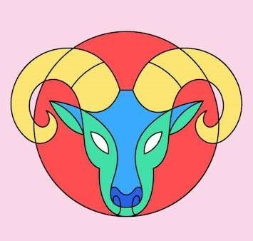
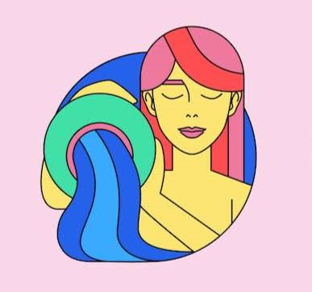
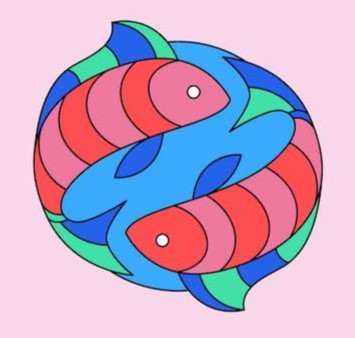
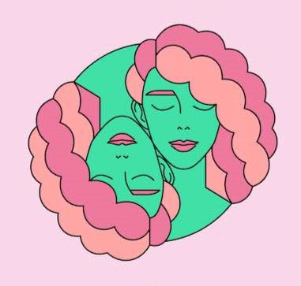
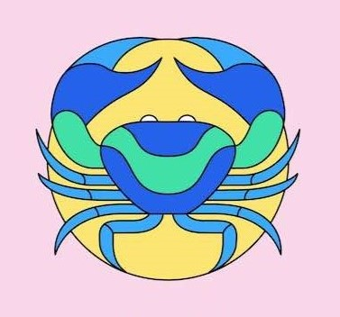
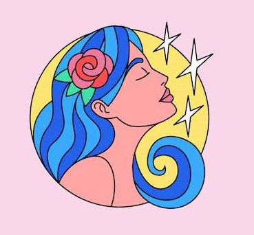
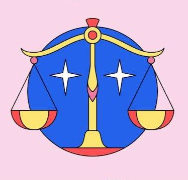
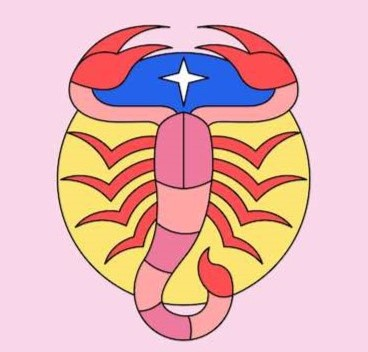
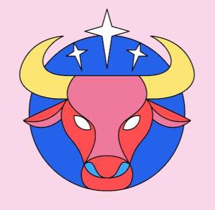
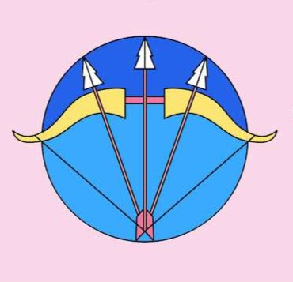

HOROSKOP VE ASTROLOJİ
Astroloji Dünyasına Hoş Geldiniz!

ASTROLOJİ NEDİR?
Astroloji, yıldızların hesabı manasına gelen “Astrologia” kelimesinden türemiştir. Türk Dil Kurumu’na göre “Yıldız falcılığı” olarak yorumlanmaktadır. Oxford Dictionary ise biraz daha genel bir tanım kullanarak; "Göksel cisimlerin hareketi ile göreceli pozisyonları ve bunların insan hayatı üzerindeki varsayılan etkilerin incelemesidir" diye yazmıştır. Astrolog Robert Currey’e göre; “Astroloji, gök cisimlerinin konumları ve hareketleri ile dünyadaki fiziksel süreçler ve yaşam arasındaki korelasyonun çalışması ve bunun sonucunda ortaya çıkan uygulamalardır. Bazı astrologlar yıldızlar ve takımyıldızlarıyla çalışsalar da, batılı astrologlar Güneş Sistemi içinde Güneş, Ay ve gezegenler (Plüton dahil) ile çalışırlar.HOROSKOP NEDİR?
Horoskop hesaplamak için bazı kişisel bilgilere ihtiyaç duyulmaktadır.Doğduğunuz anda hangi gezegenin ve Zodyak burcunun hangi astroloji evinde konumlandığını belirleyerek benliğinize dair daha derin bir içgörü elde edebilirsiniz. Doğum tarihine, doğum saatine, doğulan yere göre horoskop hesaplanması mümkündür.
Burç yorumlarına benzer bir şekilde de yorumlanan horoskop tamamen kişilere özeldir ve bu nedenle de birçok kişi tarafından merak edilir.
DÖRT ELEMENT NEDİR?
Doğduğumuz an bu dünyada aldığımız ilk nefes ile, o an ki gök durumu astroloji haritamız olarak belirlenir. Doğada bulunan bu 4 temel elementin gücü ruhen onları nasıl kullandığımız haritaya bakılarak anlaşılabilir. Aslında amaç kendini tanımak ve nihayetinde bu 4 elementin gücünü eşit ve dengeli kullanmaktır.
Doğum anımızda tüm gezegenler için gezegenlerin o an ki konumuna göre burcumuz vardır ve her burcun ait olduğu element vardır. Yoğunluk olarak hangi element varsa kişiliğimizi o elemenetin özellikleri belirler.
İnsanlar arasında uyumsal olarak da elementler en çok dikkate alınan unsurdur.
BURÇ HESAPLAMA
BURÇ NEDİR?
Kişilerin doğum anlarında gökyüzü incelendiğinde Güneş'in hangi konumda olduğuna göre şekillenen gökyüzüyle sembolize edilen simgesel ifadelerdir. 12 adet burç bulunur ve 12 ayın belirli günlerine göre dereceleriyle hesaplanarak oluşturulmuştur. 12 adet burç sırasıyla; koç, boğa, ikizler, yengeç, aslan, başak, terazi, akrep, yay, oğlak, kova ve balıktır. Burçlar sayesinde karşımızdaki kişinin karakteri hakkında tam olmasa da fikir sahibi olma şansımız bulunur.Ancak burçlar genel olarak her daim doğru kişilik analizi vermeyebilir. 12 burç olmasına rağmen insanlar arasında 12 farklı kişilik bulunur diyemeyiz.
Bunun dışında burçlar gezegenlerin hareketlerine göre doğum haritalarındaki konumlara göre o gün içerisinde mutlu, huzursuz, şanslı, şanssız gibi hissedebilirler. Eğer karamsarlık halindeyseniz burç yorumlarınıza bakabilirsiniz!
         
Lütfen bilgilerinizi istenen şekilde giriniz!
Doğum Tarihinizi Girin :
Cinsiyetinizi Seçin
YÜKSELEN HESAPLAMA
YÜKSELEN NEDİR?
Yükselen Burç, doğum anında, Doğu ufkunda yükselmekte olan burca denir. Diğer bir ifadeyle doğduğunuz anda ufukta hangi burç bulunuyorsa, o sizin yükselen burcunuzdur. Yükselen burcumuzu tespit etmek için mutlaka doğum saatimiz gerekmektedir.Örneğin eğer biz güneş doğarken doğduysak, doğu ufkunda yükselen burç bizim kendi burcumuz olur. Sonra saatler ilerledikçe sırasıyla tüm burçlar yükselir. Her dört dakikada bir, 1 derece ilerler. Yükselen burç her zaman 1. evdir. Ondan sonra gelen burçlar sırasıyla diğer evlere yerleşir.
Bu sebeple yükselen burcumuz, aynı zamanda dış görünüşümüzü, fiziki özelliklerimizi, hal ve tavırlarımızı da etkiler.
Lütfen bilgilerinizi istenen şekilde giriniz!
Doğum Tarihinizi Girin:
Doğum Saatinizi Girin:
BURÇ VE YÜKSELEN YORUMLARI
BURÇ UYUMU
Doğum haritalarımızın karşılıklı uyumunu inceleyen dala astrolojide sinastri adı verilmektedir. En doğru sinastri analizini yapabilmek için her iki kişinin doğum haritaları, doğdukları yere ve zamana göre çıkarılmış olmalıdır.
Karşılıklı doğum haritalarımızı tam olarak bilemesek de Güneş’lerimizden yola çıkarak sevdiğimizle, arkadaşlarımızla, aile bireylerimiz ve çocuklarımızla aramızdaki ilişkinin şifrelerini yakalayabiliriz.
Elementler de burç uyumu konusunda oldukça belirleyicidir. Örneğin: Su grupları duygusal iken ateş grup burçlarının daha baskın olması aralarında sorunlar çıkabileceğini gösterir.
Kendi Burcunuzu Seçiniz :
Partnerinizin Burcunu Seçiniz :
Tasarımcılar
Güvenilir araştırmalar sonucu nokta atışı yorumları derledik. Sizler için araştırmalarımızı zamanında yayınlayıp burçlarınız hakkında eşsiz bilgilere sahip olmanızı kolaylaştıracağız. Keyifli okumalar dileriz.
Eğitim Gördüğümüz Okul : Beykoz Üniversitesi
Melike Aydoğduoğlu
Site Tasarımcısı
Beykoz Üniversitesi Yazılım Mühendisliği bölümü 1. sınıf öğrencisiyim.
Ekip arkadaşım Özlem ile
birlikte bu sitede, doğduğumuz anda gökyüzü bize ne demek istiyor onları paylaştık.
Umarız beğenirsiniz!
Özlem Babatutmaz
Site Tasarımcısı
Beykoz Üniversitesi Yazılım Mühendisliği bölümü 1. sınıf öğrencisiyim. Ekip arkadaşım Melike ile
birlikte bu sitede, gezegenlerin doğduğumuz andaki konumlarının hesaplamasını ve kişiliklerimize
etkilerini paylaştık.
Umarız beğenirsiniz!